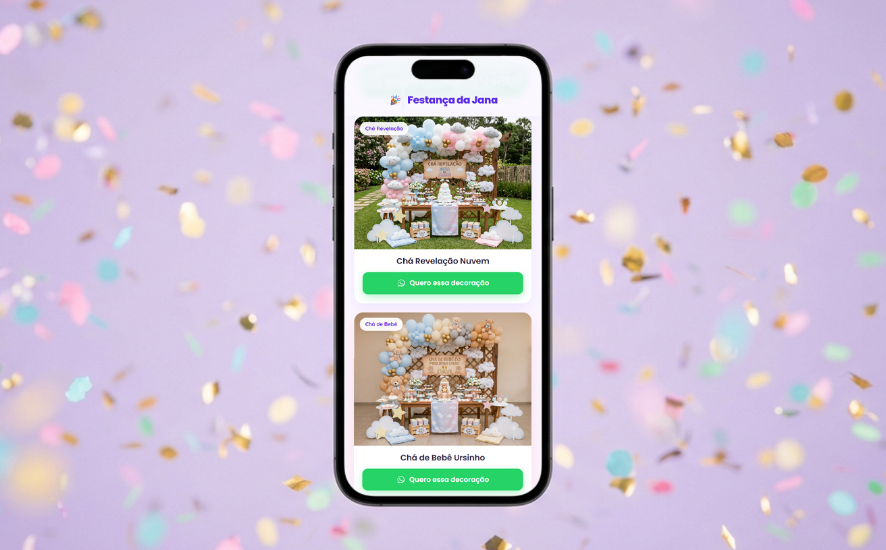

Janaina é uma profissional com talento genuíno para decoração de festas: monta mesas temáticas, cria ambientações e entrega experiências visuais que encantam. Mas toda a sua visibilidade dependia exclusivamente do boca a boca — sem nenhum canal digital que apresentasse o trabalho de forma organizada e profissional.
Este projeto nasceu como iniciativa de portfólio: criar uma LP real, com permissão dela, usando dados fictícios que preservam a privacidade enquanto demonstram o potencial do serviço. A Janaina aprovou o resultado e a publicação.
Quem ouvia falar do trabalho da Janaina por indicação precisava confiar apenas na palavra de quem recomendou — não havia fotos organizadas, não havia uma página para compartilhar, não havia forma de mostrar o serviço antes da primeira conversa.
O objetivo era resolver isso com o mínimo de fricção: uma página única, visualmente elegante, que apresentasse o serviço, mostrasse o trabalho e convertesse diretamente para o WhatsApp.
O maior risco de uma LP para o segmento de festas é cair no clichê: balões coloridos, tipografia cursiva sem critério, e excesso de elementos decorativos que disputam atenção. A direção escolhida foi oposta: elegância como base, com festivo como sotaque.
"O serviço já é festivo por natureza. A LP precisava ser elegante o suficiente para que o trabalho dela falasse mais alto que o design."
As principais decisões tomadas:
A LP entregue é leve, responsiva e independente de qualquer plataforma: HTML, CSS e JavaScript puro, publicada via GitHub Pages. Sem custos de hospedagem, sem dependência de terceiros, sem manutenção complexa.
A estrutura final em 4 seções:

A Janaina passou a ter um link único para compartilhar com potenciais clientes — substituindo descrições verbais por uma experiência visual completa do serviço.
A LP está publicada e funcionando.